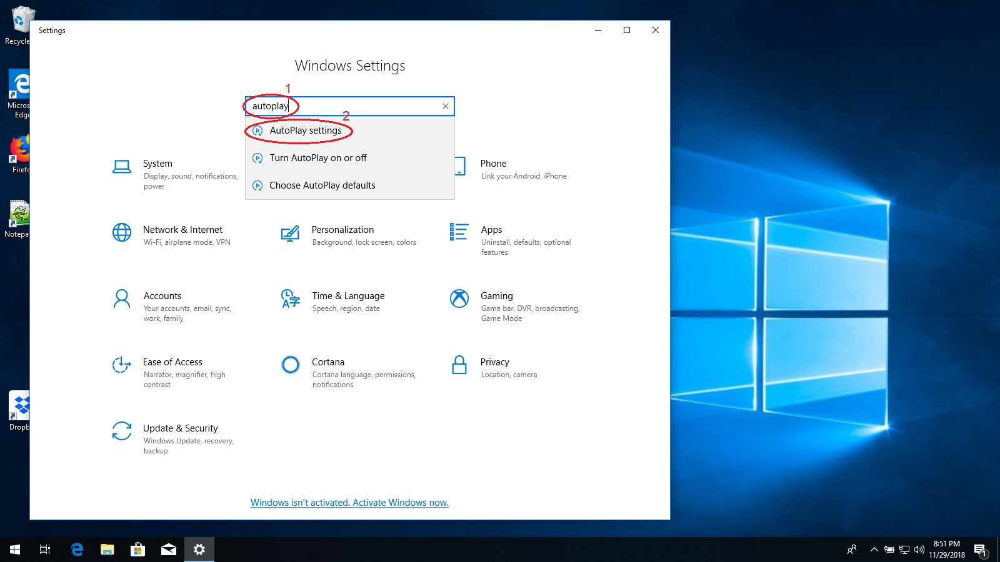

Disabling AutoPlay
Your computer is set to automatically run programs that are found on any DVDs, CDs, and USB drives that you plug
into your computer. When your computer is set this way, it becomes easier for viruses on these disks and drives to
infect your computer. By turning off AutoPlay, viruses and other malicious programs will not be able to infect
your computer until you click on them. To turn off AutoPlay, follow the steps below.
-
First, click on the start button and then the settings gear.

-
When the Settings app opens, click on the "Search" box at the top and type in "autoplay".
-
Below the search box, the words "Turn AutoPlay on or off" will appear. Click on them.

-
Look for the words "Use AutoPlay for all media and devices" above a switch and the word "On".
-
Click on the switch so that the text changes to "Off".

-
Close the Settings app. Congratulations, AutoPlay is disabled and your computer is better protected against
viruses on removable disks!